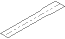
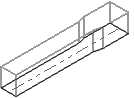
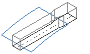
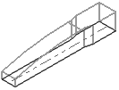
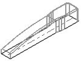
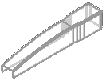
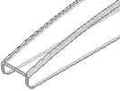
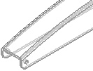

Methods used in this project
You will create this stapler housing.
To create this part, you will:
-
Sketch the basic profile.

-
 Extrude the sketch to create a solid body.
Extrude the sketch to create a solid body.

-
Sketch the upper profile and extrude to create a sheet body.

-
Trim the solid body using the sheet body.

-
Add edge blends.

-
 Shell the inside of the solid body.
Shell the inside of the solid body.

-
Round off the small lower edges.

-
Add holes.
